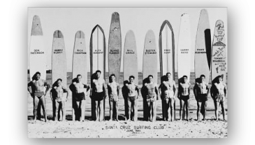
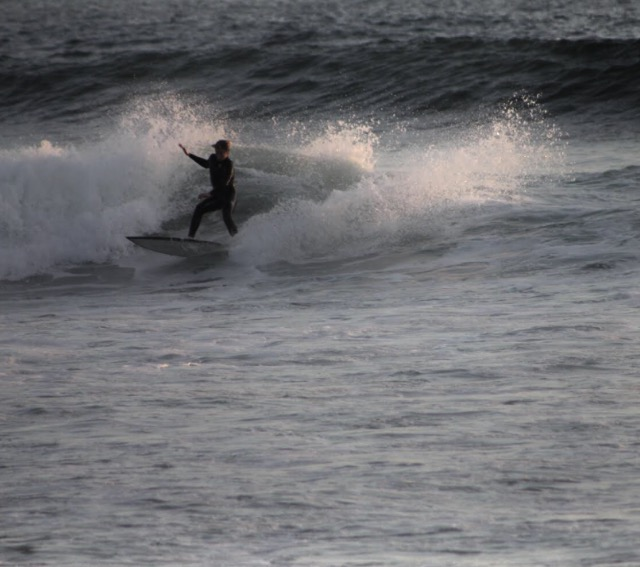

The history of surfing in Hawaii goes back to the 4th century a.d.. Polynesian’s began to make their way to the Hawaiian Island from Tahiti and the Marquesas. They brought many of their customs with them including playing in the surf on Paipo(belly) boards. During the 1940’s, a lot of American soldiers stationed at Pearl Harbor were introduced to surfing. The number of people interested in the sport continued to grow. The history of sufing in Hawaii changed to the point that some people even quit their jobs in the late 1940’s to move to Oahu to surf the big waves of Makaha Beach, Sunset Beach and Waimea Beach.
More famous discoverers like Mark Twain or Jack London – both considerable travel book authors – reported on the sport in the waves and aroused high interest in the population. The history of surfing carried on and more and more tourists had a try at the new sport. Over time, the first surf clubs came up and the beach boys became lifeguards to secure the beaches.


The most famous Surfer was Duke Kahanamoku who was born in 1890. ‘The Duke’ was a talented swimmer and obviously one of the best surfers on the Hawaiian Islands. In 1912, he competed in the Olympic Games in Stockholm and won the 100-meter freestyle contest, not least because of the crawl technique that he copied from surfing. After his success, he traveled around the world and introduced surfing in all regions where the conditions made it possible e.g. in Australia or California.